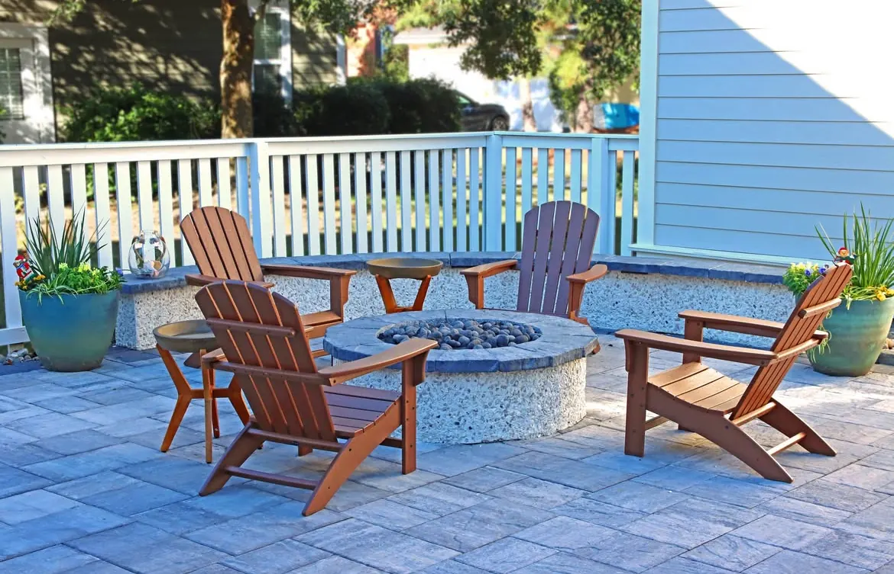
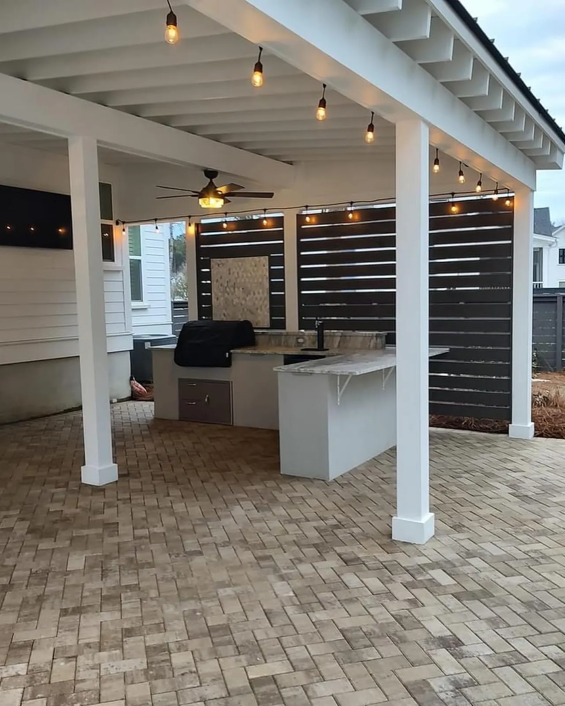

Transform Your Charleston Property with Professional Landscape Lighting: The Ultimate Guide
Charleston, South Carolina, is a city defined by its beauty. From the historic architecture of Rainbow Row to the lush, moss-draped oaks of the Lowcountry, our landscape is a masterpiece. But when the sun sets, does the magic of your property fade into the darkness? For many homeowners, the answer is yes. Your carefully manicured gardens, elegant walkways, and stunning architectural details disappear, and with them, a significant opportunity to enhance your home’s beauty, safety, and value.
This is where professional landscape lighting in Charleston, SC, transforms a property. It’s not merely about placing a few lights in the ground; it’s a sophisticated design practice that paints your home with light, revealing its character and extending its enjoyment long after dusk. If you're looking to elevate your home's curb appeal and create an enchanting nighttime atmosphere, you're in the right place. With Cramer's Landscaping currently ranking on the cusp of page one for landscape lighting Charleston SC, this guide is designed to illuminate the path to a brilliantly lit home.
This ultimate guide will walk you through every aspect of outdoor lighting, from the foundational benefits to the nuances of design and technology. We will explore the different types of fixtures, the art of lighting techniques, and why a professional approach is essential to achieving a truly stunning result. By the end, you will understand how a well-executed landscape lighting plan is one of the most impactful investments you can make in your Charleston home.
The Triple Crown of Benefits: Why Every Charleston Home Needs Landscape Lighting

Professional outdoor lighting offers a powerful, three-pronged return on investment, enhancing your property in ways that go far beyond simple aesthetics. It’s a practical upgrade that improves your quality of life, protects your family, and increases your home’s value.
1. Uncompromising Security: Your First Line of Defense
A dark property is an inviting target for intruders. Shadows provide cover, allowing potential burglars to approach your home undetected. Strategic landscape lighting is one of the most effective and affordable security measures a homeowner can take.
According to security experts, a well-lit exterior is a powerful deterrent. It eliminates hiding spots around your foundation, entry points, and walkways, making any suspicious activity immediately visible to you and your neighbors.
A professionally designed system doesn't create harsh, glaring light but rather a soft, comprehensive illumination that leaves no area in deep shadow.
By illuminating key areas such as gates, doors, windows, and the perimeter of your property, you create a zone of safety. This proactive approach to security provides peace of mind, knowing that your home is visibly protected throughout the night.
2. Enhanced Safety: Navigating Your Property with Confidence
Beyond deterring intruders, outdoor lighting plays a crucial role in preventing accidents. Charleston’s historic, and sometimes uneven, walkways and the prevalence of natural elements like tree roots can create tripping hazards in the dark. A slip and fall can lead to serious injury for family members and guests alike.
Thoughtfully placed path lights, step lights, and downlights ensure that every part of your property is safe to navigate after dark. Key areas to illuminate for safety include:
- Walkways and Pathways: Guiding guests safely from the driveway to your front door.
- Stairs and Decks: Preventing missteps on changes in elevation.
- Pool and Patio Areas: Ensuring safe navigation during evening entertaining.
- Driveways: Providing clear visibility for parking and walking.
A well-lit property is a safe property. It allows you and your guests to move about with confidence, reducing the risk of accidents and increasing the usability of your outdoor spaces.
3. Breathtaking Aesthetics and Curb Appeal
While security and safety are paramount, the most visually dramatic benefit of landscape lighting is the stunning transformation of your home’s appearance. During the day, your landscape is shaped by the sun. At night, you have the power to become the artist, using light and shadow to create a captivating scene.
Professional lighting design accentuates the best features of your home and landscape:
- Architectural Highlighting: Uplighting can draw attention to beautiful columns, brickwork, or other architectural details.
- Garden and Plant Showcasing: Soft lights can make specimen trees, flower beds, and garden sculptures focal points of the evening landscape.
- Creating Ambiance: Warm, gentle light on a patio or in a seating area creates an inviting, resort-like atmosphere for relaxing or entertaining.
- Boosting Property Value: A professionally installed landscape lighting system is a highly sought-after feature that significantly enhances curb appeal and can increase your home's market value.
By working with a skilled landscape design team, you can create a lighting plan that is tailored to your property’s unique character, ensuring it looks just as magnificent at night as it does during the day.
The Tools of the Trade: A Guide to Landscape Lighting Fixtures
Achieving a professional look requires using the right tools for the job. A lighting designer’s palette consists of various fixtures, each with a specific purpose. Understanding these fixture types is the first step in appreciating the artistry of a well-lit landscape.
| Fixture Type | Primary Use | Best For... |
|---|---|---|
| Spotlights | Directional, high-intensity light | Highlighting trees, architectural features, flags |
| Floodlights | Wide-beam, general illumination | Washing walls, lighting driveways, broad areas |
| Path Lights | Low-level, downward-facing light | Illuminating walkways, garden bed edges |
| Well/Inground Lights | Installed flush with the ground | Uplighting columns, trees, and walls from below |
| Hardscape Lights | Small, linear fixtures | Integrating into walls, steps, and under capstones |
| Deck/Step Lights | Small, discreet fixtures | Mounting on deck posts, stair risers for safety |
| Underwater Lights | Fully submersible fixtures | Illuminating ponds, fountains, and water features |
Spotlights and Floodlights: The Workhorses
The main difference between these two is the width of the light beam. Spotlights produce a narrow, focused beam (typically under 45 degrees) perfect for accenting a specific object, like a statue or a tall palm tree. Floodlights cast a much wider beam (up to 120 degrees), making them ideal for illuminating broad surfaces like a stone wall or a wide section of your home’s facade.
Path Lights: The Guiding Beacons
These are perhaps the most recognizable type of landscape light. Their purpose is primarily functional: to provide safe passage along walkways and garden paths. However, their design can also be a beautiful aesthetic element. When choosing path lights, it's important to select a style that complements your home’s architecture and to space them correctly to create a gentle, inviting guide rather than a harsh, runway-like effect.
Well Lights and Hardscape Lights: The Hidden Artists
These fixtures are designed to be heard, not seen. Well lights are installed directly into the ground, their tops flush with the surface, to create dramatic uplighting effects on trees and walls without a visible fixture. Hardscape lights are small, versatile LED fixtures that can be tucked under stair treads, retaining wall caps, and outdoor kitchen counters, casting a warm, downward glow that seems to emanate from the structure itself.
The Art of Illumination: Mastering Landscape Lighting Techniques

Having the right fixtures is only half the battle. The magic of professional Charleston landscape lighting lies in the techniques used to apply the light. A lighting designer combines these techniques to create depth, drama, and balance.
- Uplighting: This is the most common technique, involving placing a light at the base of an object and aiming it upward. It’s perfect for highlighting the texture of a brick wall or the majestic structure of a live oak.
- Downlighting (or Moonlighting): This involves mounting a fixture high up in a tree and angling it downward. The light filters through the branches, casting soft, dappled shadows on the ground below, mimicking the effect of natural moonlight.
- Silhouetting: To achieve this effect, a light is placed behind an object and aimed at a wall or other vertical surface. This conceals the details of the object itself, instead creating a dramatic, dark outline against a lit backdrop.
- Shadowing: This is the reverse of silhouetting. A light is placed in front of an object, aimed at it, and the object casts an intriguing shadow onto the surface behind it.
- Grazing: This technique involves placing a light very close to a textured surface, such as a stone wall or a tree trunk, and aiming the beam parallel to it. This exaggerates the surface texture, creating a beautiful interplay of light and shadow.
By layering these different techniques, a lighting professional can transform a flat, one-dimensional nighttime space into a rich, multi-layered visual experience.
The LED Revolution: The Smart Choice for Modern Landscape Lighting
Just a decade ago, most landscape lighting systems used halogen bulbs. Today, LED (Light Emitting Diode) technology has completely taken over the industry, and for good reason. Modern LED landscape lighting is superior in every significant way.
Why LED is the Only Choice
- Energy Efficiency: LED fixtures consume up to 80% less energy than their halogen counterparts. This translates to significant savings on your electricity bill, especially for a comprehensive system.
- Longevity: An LED bulb can last for 40,000 hours or more, which can be over 20 years of typical use. Halogen bulbs, by contrast, often need to be replaced every year or two. This dramatically reduces maintenance costs and hassle.
- Durability: LED bulbs are solid-state devices, meaning they have no fragile filament to break. They are far more resistant to shock, vibration, and the rigors of an outdoor environment.
- Color Options: LED technology offers a wide range of color temperatures, from a very warm, candle-like glow to a crisp, cool white. This allows for precise control over the mood and ambiance of your lighting design.
While the upfront cost of LED fixtures is slightly higher, the massive savings in energy and maintenance make them the far more economical choice over the life of the system.
DIY vs. Professional Installation: Why Expertise Matters

With lighting kits readily available at big-box stores, the temptation to DIY a landscape lighting project is strong. However, a professional installation is an investment that pays for itself in performance, safety, and longevity.
The Pitfalls of DIY
- Poor Design: An amateur layout often results in the "runway look"—too many lights in a straight line—or uneven, glaring "hot spots."
- Voltage Drop: In a low-voltage system, improper wire gauges and connections can cause lights at the end of the line to be noticeably dimmer than those closer to the transformer.
- Unsafe Connections: Poorly made, non-waterproof wire connections are the #1 point of failure in a system. They are susceptible to corrosion and short-circuiting, leading to flickering lights and system failure.
- Fixture Quality: The fixtures in DIY kits are typically made of plastic or thin aluminum and are not built to withstand the Charleston climate. They will fade, corrode, and fail in just a few years.
The Professional Advantage
A professional installer like Cramer’s Landscaping brings a level of expertise and quality that ensures a beautiful, lasting result.
- Expert Design: We understand the art and science of lighting design, creating a custom plan that complements your home and landscape.
- Proper Engineering: We calculate wire runs and voltage loads to ensure that every fixture in your system performs at its peak.
- Durable, Waterproof Connections: We use high-quality, silicone-filled wire nuts and other professional-grade connectors to create connections that are 100% waterproof and will last for the life of the system.
- Commercial-Grade Fixtures: We use fixtures made from solid brass, copper, or marine-grade aluminum. These fixtures are built to last a lifetime and will develop a beautiful, natural patina over time.
Designing Your Charleston Landscape Lighting: Key Considerations
Creating a successful landscape lighting Charleston SC design requires careful planning and an understanding of your property's unique characteristics. A professional designer will evaluate several key factors to create a system that is both beautiful and functional.
Understanding Your Property's Architecture
Your home's architectural style should guide the aesthetic direction of your lighting design. A historic Charleston single house with its grand columns and piazzas calls for a different approach than a modern, minimalist home. The lighting should enhance and complement the existing architecture, not compete with it. For example, traditional brass fixtures with a classic design work beautifully with historic homes, while sleek, contemporary fixtures suit modern architecture.
Identifying Focal Points
Every property has features that deserve to be highlighted. These might include a magnificent live oak tree, a beautiful fountain, a unique garden sculpture, or the elegant facade of your home. A skilled designer will walk your property with you to identify these focal points and create a lighting plan that draws the eye to them.
Layering Light for Depth and Interest
The most sophisticated lighting designs use multiple layers of light at different heights and intensities. This creates depth and visual interest, preventing the flat, one-dimensional look that results from using only one type of fixture. A well-layered design might include uplighting on trees, path lights along walkways, downlighting from overhead structures, and accent lights on garden features.
Balancing Brightness and Subtlety
One of the most common mistakes in landscape lighting is using too much light or lights that are too bright. The goal is not to replicate daylight but to create a soft, enchanting glow that reveals your property's beauty without overwhelming it. Professional-grade fixtures with adjustable brightness and beam angles allow for precise control, ensuring that each element is lit to perfection.
Seasonal Considerations for Charleston Landscape Lighting

Charleston's climate and the changing seasons offer unique opportunities and considerations for outdoor lighting design.
Spring and Summer: Showcasing Lush Growth
During the warmer months, your landscape is at its most vibrant. Trees are full, flowers are blooming, and outdoor entertaining is in full swing. Your lighting design should showcase this lush growth, with uplighting on trees to reveal their full canopy and accent lights on blooming garden beds. This is also the season when you'll likely spend the most time on your patio or deck, so ensuring these areas are well-lit and inviting is essential.
Fall and Winter: Highlighting Structure and Form
As the leaves fall and the landscape becomes more sparse, the focus shifts to the structural elements of your property. The bare branches of trees, the architecture of your home, and hardscape features like stone walls and pathways become more prominent. A well-designed lighting system will highlight these elements, ensuring your property remains beautiful even during the dormant season. The holiday season also offers an opportunity to integrate festive lighting into your existing system.
Weather Resistance and Durability
Charleston's coastal climate, with its high humidity, salt air, and occasional tropical storms, demands lighting fixtures that are built to withstand harsh conditions. This is why professional installers use commercial-grade fixtures made from corrosion-resistant materials like solid brass, copper, and marine-grade aluminum. These fixtures are designed to last for decades, even in the challenging Lowcountry environment.
Maintaining Your Landscape Lighting System
While a professionally installed LED system requires far less maintenance than older halogen systems, a small amount of regular care will keep it performing at its best.
Annual Maintenance Checklist
- Clean Fixtures: Gently wipe down fixtures to remove dirt, pollen, and salt buildup. This ensures maximum light output and prevents corrosion.
- Adjust Aim: As plants grow and landscapes change, fixtures may need to be re-aimed to maintain the desired lighting effect.
- Check Connections: Inspect wire connections for any signs of corrosion or damage.
- Trim Vegetation: Keep plants trimmed away from fixtures to prevent them from blocking the light and to allow for proper heat dissipation.
- Test the Timer: Ensure that your timer is functioning correctly and adjust the on/off times as needed throughout the year.
Many homeowners choose to have their lighting system professionally maintained as part of a comprehensive landscape maintenance plan, ensuring that it remains in peak condition year-round.
Illuminate Your Charleston Home with Cramer’s Landscaping
Your home is your most significant investment and a source of pride. A professional landscape lighting system is the final touch that allows your property to shine, unlocking its full potential for beauty, safety, and enjoyment. It’s a transformative upgrade that you will appreciate every single night.
At Cramer's Landscaping, we believe that exceptional design and quality craftsmanship are the cornerstones of a successful project. Our team of experienced lighting designers and technicians is passionate about creating stunning, custom-tailored landscape lighting systems that exceed our clients' expectations. We have been proudly serving the Charleston community for years, and our commitment to quality and customer satisfaction is reflected in every project we undertake. You can learn more about our company and our values on our About Us page.
We understand that your home is a reflection of your personal style and a source of pride.
That's why we take the time to listen to your vision and work collaboratively with you to bring it to life. From the initial consultation to the final walkthrough, we are dedicated to providing a seamless, professional experience. Our goal is not just to install lights but to create an outdoor environment that you and your family will enjoy for years to come.
If you are ready to see your home in a whole new light, we invite you to take the next step. Contact Cramer’s Landscaping today for a complimentary design consultation. Let us show you how we can transform your Charleston property with the magic of professional landscape lighting.
Frequently Asked Questions About Landscape Lighting in Charleston
How much does professional landscape lighting cost?
The cost can vary widely depending on the size of your property, the number of fixtures, and the complexity of the design. However, it is one of the most cost-effective ways to improve your home's curb appeal and security. We offer free consultations to provide a custom estimate for your property.
How long does installation take?
Most residential projects can be completed in one to three days, with minimal disruption to your landscaping.
Is the system difficult to operate?
Not at all. Most systems are controlled by an astronomical timer that automatically turns the lights on at dusk and off at a pre-set time, adjusting itself throughout the year as the days get longer or shorter. We also offer smart-home integration, allowing you to control your lights from your phone or tablet.
Planning a Project of Your Own?
See everything we design and build, or get in touch to talk through your ideas with Doug and Zach.